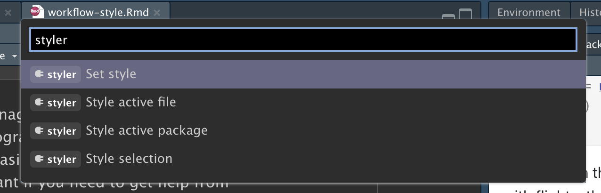
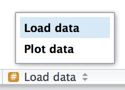

1 워크플로: 코드 스타일 (Workflow: code style)
좋은 코딩 스타일은 올바른 구두점과 같습니다. 그것 없이도 어떻게든 해나갈 수는 있지만, 있으면 코드를 읽기가 훨씬 더 쉬워집니다(itsuremakesthingseasiertoread). 초보 프로그래머일지라도 자신의 코드 스타일을 갈고닦는 것은 좋은 생각입니다. 일관된 스타일을 사용하면 다른 사람들(미래의 여러분 포함!)이 여러분의 작업을 더 쉽게 읽을 수 있으며, 특히 다른 사람에게 도움을 받아야 할 때 중요합니다. 이 장에서는 이 책 전체에서 사용되는 tidyverse 스타일 가이드(tidyverse style guide)의 가장 중요한 점들을 소개할 것입니다.
처음에는 코드 스타일을 맞추는 것이 조금 지루하게 느껴지겠지만, 연습하다 보면 곧 제2의 천성이 될 것입니다. 게다가 Lorenz Walthert가 만든 styler 패키지처럼 기존 코드의 스타일을 빠르게 다시 지정해주는 훌륭한 도구들도 있습니다. install.packages("styler")로 이 패키지를 설치한 후에는 RStudio의 명령 팔레트(command palette)를 통해 쉽게 사용할 수 있습니다. 명령 팔레트를 사용하면 RStudio의 내장 명령과 패키지에서 제공하는 여러 애드인(addins)을 사용할 수 있습니다. Cmd/Ctrl + Shift + P를 눌러 팔레트를 연 다음 “styler”를 입력하여 styler가 제공하는 모든 단축키를 확인하세요. ?@fig-styler가 그 결과를 보여줍니다.
이 장의 코드 예제에서는 tidyverse 및 nycflights13 패키지를 사용할 것입니다.
library(tidyverse)
library(nycflights13)1.1 이름 (Names)
우리는 ?@sec-whats-in-a-name에서 이름에 대해 간략히 이야기했습니다. 변수 이름(<-에 의해 생성된 것과 mutate()에 의해 생성된 것)에는 소문자, 숫자, _만 사용해야 한다는 것을 기억하세요. 이름 내의 단어를 구분하려면 _를 사용하세요.
# 권장(Strive for):
short_flights <- flights |> filter(air_time < 60)
# 피해야 할 것(Avoid):
SHORTFLIGHTS <- flights |> filter(air_time < 60)일반적인 경험 법칙으로, 타이핑이 빠른 간결한 이름보다는 이해하기 쉬운 길고 설명적인 이름을 선호하는 것이 좋습니다. 짧은 이름은 코드를 작성할 때 상대적으로 아주 적은 시간만 절약해 주지만(특히 자동 완성 기능이 입력을 도와주기 때문에), 나중에 오래된 코드로 돌아왔을 때 알쏭달쏭한 약어를 이해하느라 쩔쩔매야 한다면 시간이 많이 걸릴 수 있습니다.
관련된 것들의 이름이 많다면 최선을 다해 일관성을 유지하세요. 이전 규칙을 잊어버렸을 때 불일치가 발생하기 쉬우므로 다시 돌아가 이름을 변경해야 한다고 해서 기분 나빠하지 마세요. 일반적으로 한 가지 주제를 변형한(variation on a theme) 변수들이 여러 개 있는 경우 공통된 접미사보다는 공통된 접두사를 부여하는 것이 좋습니다. 왜냐하면 자동 완성 기능이 변수의 시작 부분에서 가장 잘 작동하기 때문입니다.
1.2 공백 (Spaces)
^를 제외한 수학 연산자(즉, +, -, ==, <, …)와 할당 연산자(<-)의 양쪽에 공백을 둡니다.
# 권장
z <- (a + b)^2 / d
# 피해야 할 것
z<-( a + b ) ^ 2/d일반적인 함수 호출의 경우 괄호 안이나 밖에 공백을 넣지 마세요. 표준 영어에서와 마찬가지로 항상 쉼표 뒤에는 공백을 두세요.
# 권장
mean(x, na.rm = TRUE)
# 피해야 할 것
mean (x ,na.rm=TRUE)정렬(alignment)을 개선하기 위해 여분의 공백을 추가하는 것은 괜찮습니다. 예를 들어 mutate()에서 여러 변수를 생성하는 경우 모든 =가 한 줄로 정렬되도록 공백을 추가할 수 있습니다.1 이렇게 하면 코드를 대강 훑어보기(skim)가 더 쉬워집니다.
flights |>
mutate(
speed = distance / air_time,
dep_hour = dep_time %/% 100,
dep_minute = dep_time %% 100
)1.3 파이프 (Pipes)
|> 앞에는 항상 공백이 있어야 하며 대개 줄의 마지막에 와야 합니다. 이렇게 하면 새로운 단계를 추가하거나, 기존 단계를 재정렬하거나, 단계 내의 요소를 수정하거나, 왼쪽에 있는 동사들을 쭉 훑어보면서 전체적인 흐름(10,000 ft view)을 파악하기가 더 쉬워집니다.
# 권장
flights |>
filter(!is.na(arr_delay), !is.na(tailnum)) |>
count(dest)
# 피해야 할 것
flights|>filter(!is.na(arr_delay), !is.na(tailnum))|>count(dest)파이프라인으로 연결되는 함수에 이름이 있는 인수(named arguments)(mutate() 또는 summarize())가 있는 경우 각 인수를 새 줄에 배치하세요. 함수에 이름이 있는 인수가 없는 경우(select() 또는 filter()) 너무 길지 않은 한 모든 것을 한 줄에 유지하고, 한 줄을 넘어간다면 각 인수를 자체 줄(own line)에 배치해야 합니다.
# 권장
flights |>
group_by(tailnum) |>
summarize(
delay = mean(arr_delay, na.rm = TRUE),
n = n()
)
# 피해야 할 것
flights |>
group_by(
tailnum
) |>
summarize(delay = mean(arr_delay, na.rm = TRUE), n = n())파이프라인의 첫 번째 단계 후에는 각 줄을 두 개의 공백(two spaces)으로 들여쓰기하세요. RStudio는 |> 다음의 줄 바꿈 후 자동으로 공백을 넣어줄 것입니다. 각 인수를 자체 줄에 배치하는 경우 두 개의 공백으로 추가 들여쓰기를 합니다. )가 자체 줄에 있는지 확인하고, 함수 이름의 수평 위치와 일치하도록 들여쓰기를 해제하세요.
# 권장
flights |>
group_by(tailnum) |>
summarize(
delay = mean(arr_delay, na.rm = TRUE),
n = n()
)
# 피해야 할 것
flights|>
group_by(tailnum) |>
summarize(
delay = mean(arr_delay, na.rm = TRUE),
n = n()
)
# 피해야 할 것
flights|>
group_by(tailnum) |>
summarize(
delay = mean(arr_delay, na.rm = TRUE),
n = n()
)파이프라인이 한 줄에 쉽게 들어맞는다면 이러한 규칙 중 일부를 어겨도 괜찮습니다. 하지만 우리 모두의 경험상 짧은 코드 조각은 더 길어지는 것이 흔하기 때문에, 장기적으로 보면 시작할 때부터 필요한 수직 공간을 모두 확보해 두는 것이 대개 시간을 절약해 줍니다.
# 이 코드는 한 줄에 콤팩트하게 맞습니다.
df |> mutate(y = x + 1)
# 이 코드는 4배 많은 줄을 차지하지만, 향후 더 많은 변수와
# 더 많은 단계로 쉽게 확장할 수 있습니다.
df |>
mutate(
y = x + 1
)마지막으로 10-15줄보다 더 긴 파이프를 작성할 때는 주의하세요. 파이프를 더 작은 하위 작업(sub-tasks)으로 나누고 각 작업에 정보 제공 목적의(informative) 이름을 부여하도록 노력하세요. 이름은 읽는 사람에게 어떤 일이 일어나고 있는지 알려주는 단서가 되며 중간 결과가 예상대로인지 더 쉽게 확인할 수 있도록 해줍니다. 어떤 것에 유익한 정보를 담은 이름을 부여할 수 있다면 항상 그렇게 해야 합니다. 예를 들어, 피벗(pivoting) 또는 요약(summarizing) 후와 같이 데이터 구조를 근본적으로 변경할 때가 이에 해당합니다. 처음부터 잘할 거라 기대하지 마세요! 이는 적절한 이름을 붙일 수 있는 중간 상태가 있다면 긴 파이프라인을 나누라는 의미입니다.
1.4 ggplot2
파이프에 적용되는 것과 동일한 기본 규칙이 ggplot2에도 적용됩니다. +를 |>와 같은 방식으로 다루기만 하면 됩니다.
flights |>
group_by(month) |>
summarize(
delay = mean(arr_delay, na.rm = TRUE)
) |>
ggplot(aes(x = month, y = delay)) +
geom_point() +
geom_line()다시 한번 말씀드리지만, 함수의 모든 인수를 한 줄에 넣을 수 없다면 각 인수를 자체 줄에 배치하세요.
flights |>
group_by(dest) |>
summarize(
distance = mean(distance),
speed = mean(distance / air_time, na.rm = TRUE)
) |>
ggplot(aes(x = distance, y = speed)) +
geom_smooth(
method = "loess",
span = 0.5,
se = FALSE,
color = "white",
linewidth = 4
) +
geom_point()|>에서 +로 전환되는 부분을 주의 깊게 살펴보세요. 우리는 이런 전환이 필요하지 않기를 바라지만 불행히도 ggplot2는 파이프가 발견되기 전에 작성되었습니다.
1.5 섹션 주석 (Sectioning comments)
스크립트가 길어지면 섹션(sectioning) 주석을 사용하여 파일을 관리하기 쉬운 여러 조각으로 나눌 수 있습니다.
# Load data --------------------------------------
# Plot data --------------------------------------RStudio는 이러한 헤더를 만들기 위한 키보드 단축키(Cmd/Ctrl + Shift + R)를 제공하며, ?@fig-rstudio-sections에 표시된 것처럼 에디터 왼쪽 하단의 코드 내비게이션 드롭다운에 이들을 표시합니다.

1.6 연습 문제 (Exercises)
위의 지침을 따라 다음 파이프라인의 스타일을 다시 지정하세요.
flights|>filter(dest=="IAH")|>group_by(year,month,day)|>summarize(n=n(), delay=mean(arr_delay,na.rm=TRUE))|>filter(n>10) flights|>filter(carrier=="UA",dest%in%c("IAH","HOU"),sched_dep_time> 0900,sched_arr_time<2000)|>group_by(flight)|>summarize(delay=mean( arr_delay,na.rm=TRUE),cancelled=sum(is.na(arr_delay)),n=n())|>filter(n>10)
1.7 요약 (Summary)
이 장에서는 코드 스타일의 가장 중요한 원칙에 대해 배웠습니다. 처음에는 이들이 (실제로 그렇듯이!) 임의적인 규칙의 집합처럼 느껴질 수 있지만, 시간이 지나면서 더 많은 코드를 작성하고 더 많은 사람과 코드를 공유하게 되면 일관된 스타일이 얼마나 중요한지 알게 될 것입니다. 그리고 styler 패키지를 잊지 마세요. 스타일이 좋지 않은 코드의 품질을 빠르게 향상시키는 훌륭한 방법입니다.
다음 장에서는 다시 데이터 과학 도구로 돌아가 타이디 데이터(tidy data)에 대해 알아봅니다. 타이디 데이터는 전체 tidyverse에서 사용되는, 데이터 프레임을 구성하는 일관된 방법입니다. 이러한 일관성은 타이디 데이터를 가지고 있으면 대부분의 tidyverse 함수와 잘 작동하기 때문에 당신의 삶을 더 편하게 만들어줍니다. 물론 현실 세계는 결코 쉽지 않으며, 여러분이 마주치게 될 대부분의 데이터셋은 아직 타이디한(tidy) 상태가 아닐 것입니다. 그래서 저희는 깔끔하지 않은(untidy) 데이터를 정리하기 위해 tidyr 패키지를 사용하는 방법도 알려드릴 것입니다.
dep_time은HMM또는HHMM형식이므로 정수 나눗셈(%/%)을 사용하여 시간을 구하고 나머지(모듈로라고도 함,%%)를 사용하여 분을 구합니다.↩︎